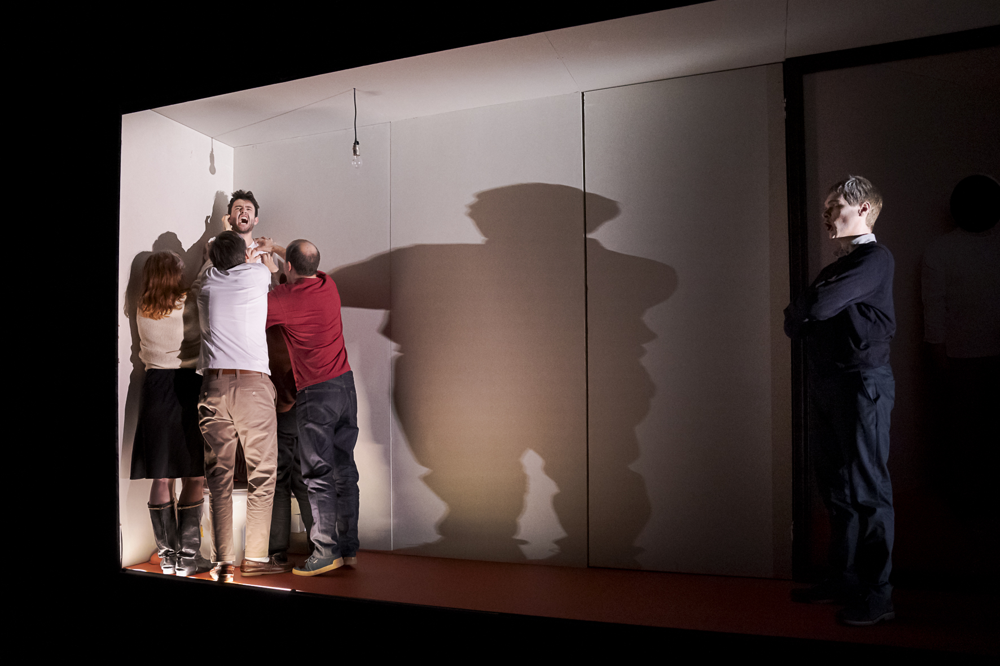
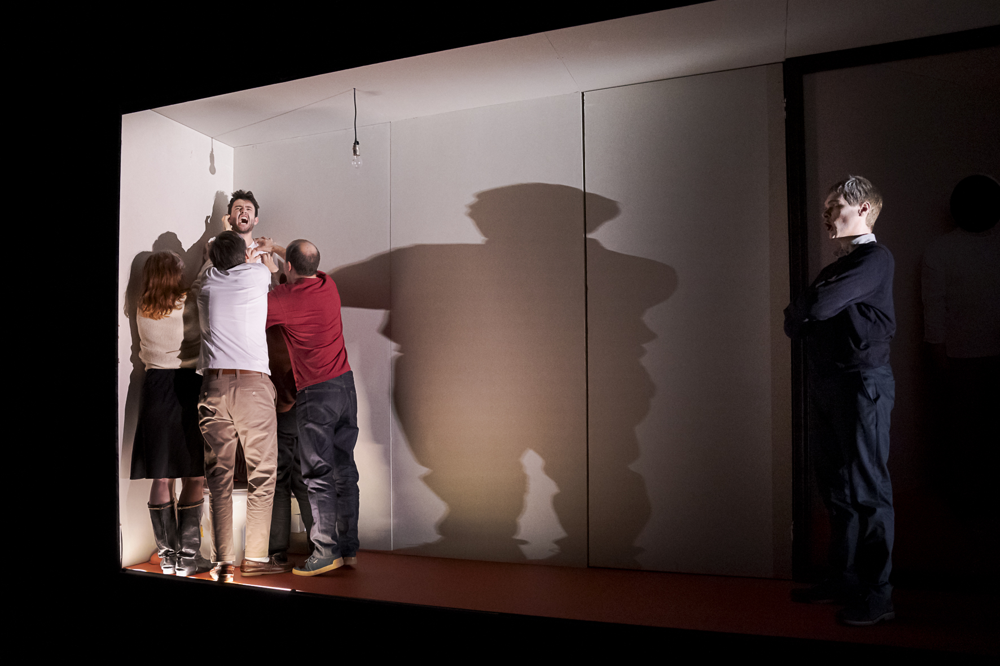

Lars Marcel Braun (*1994 in Aachen; raised in Seoul, Oakland and Lexington) is a stage director working across opera, theatre, and visual arts. To finance his studies in physics, musicology, and Slavic literature in Zurich, he found work as an extra at the opera — an experience that exposed him to theatre and sparked his path into directing. After several internships and assistantships, he was appointed staff director at the Komische Oper Berlin from 2014 to 2017, personally invited by Barrie Kosky. Since then, he has worked as a freelance assistant and associate at major theatres across Europe. His practice has been shaped by collaborations with mentors including David Alden, Andreas Homoki, Eva-Maria Höckmayr, Jan-Philipp Gloger, Kirill Serebrennikov, Ted Huffmann, and Nanine Linning.
His own artistic projects include a series of immersive installations at Milkshake Festival in Amsterdam, blending nightlife aesthetics with theatrical interventions with drag performers. Recent works include acclaimed debuts at Semperoper Dresden and Oper Graz. The upcoming season is highlighted by a world premiere in Graz during steirischer herbst and his first opera buffa at Oldenburgisches Staatstheater.
Lars is a fellow of Akademie Musiktheater heute in the 2024–2026 selection.
geschichte
operetta a capella by oscar strasnoy, based on fragments from witold gombrowicz (2003)
oper graz
premiere 25.4.23
director: lars marcel braun
set & costumes: victor labarthe d'arnoux
lights: daniel weiss
dramaturgy: dorothee harpain
w/ ana caseiro, ellen rose kelly, felix heuser, johannes wieners, harald hieronymus hein
(video upon request)
 

*photos copyright werner kmetitsch*
la traviata
opera in three acts by giuseppe verdi
staatstheater darmstadt
premiere 28.1.23
conductor: daniel cohen
director: karsten wiegand
associate director: lars marcel braun
costumes: alfred mayerhofer
choreo: otto pichler
dramaturgy: isabelle becker
w/ hila baggio, cathrin lange, solgerd isalv, ingrid katzengruber, andres agudelo, matthew vickers, aluda todua, julian orlishausen, michael pegher, marco mondragón, david pichlmaier, jared ice, opernchor des staatstheaters darmstadt, statisterie des staatstheater darmstadt


*photos copyright nils heck*
you are not what you say i am
immersive interdisciplinary installation
milkshake festival 2019 x pornceptual
concept, direction and video: lars marcel braun
choreography: lars marcel braun in collaboration with all artists
set: victor labarthe d'arnoux
lights: michiel knoop
vj: zoey vero
w/ far too many drag performers to all name, patrick mason, dancers of ndt, etc.


slagroom
interactive installation
milkshake festival 2018 x pornceptual
concept, direction and video: lars marcel braun
set: victor labarthe d'arnoux
lights: marijn hubgretse
vj: zoey vero
w/ all drag performers in attendance and guests of the festival


world premiere 5.10.25 @ musikprotokoll graz/steirischer herbst
humanoid
sci-fi oper by leonard evers with a libretto by pamela dürr (2018)
semperoper dresden
premiere 13.6.25
conductor: chloé dufresne
director: lars marcel braun
video: janic bebi
set: victor labarthe d'arnoux
costumes: selina tholl
dramaturgy: martin lühr
lights: marco dietzel
w/ sofia savenko, dominika škrabalova, jongwoo hong, gerrit illenberger, johannes wieners, ks andreas scheibner, komparserie der semperoper


*photos copyright sebastian hoppe*
premiere 18.4.26 @ oldenburgisches staatstheater
TBA (premiere 5.12.25)
premiere 20.6.26 @ oper köln (co-regie)